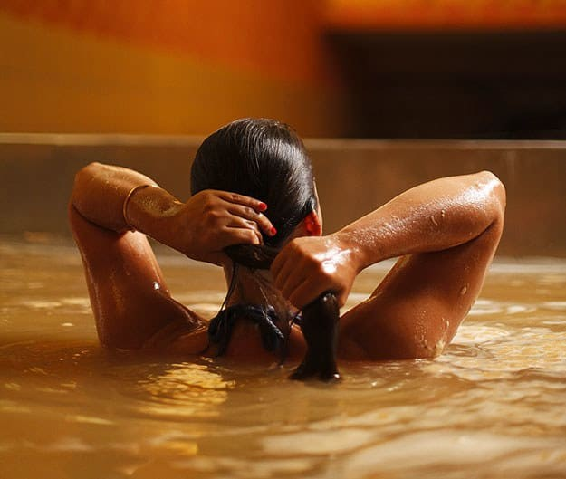

10 ÉRDEKESSÉG A SÖRRŐL

- 2013-ig Oroszországban a sört nem sorolták az alkoholtartalmú italok közé
- Nigériában több Guinness-sör fogy, mint Írországban.
- Japánban a sörös dobozok tetejét Braille-írásmóddal is „feliratozták”, hogy alkohol.
- Niels Bohr Nobel-díjas dán fizikus 1922-ben miután elnyerte a fizikai Nobel-díjat, még egy ajándékot kapott: Carlsberg-sőrfőzdéből a sört a házáig közvetlenül vezetéken kapta. Így egész életében ingyen ihatta a Carlsberget.
- Afrikában erjesztett banánból készült sört isznak.
- A világ legerősebb söre 67,5% alkohol tartalmú.
- Ausztriában van egy sörfőzde, ahol szó szerint fürödhet a sörben.
- Az első dobozos sört 1935-ben adták el.